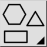

Værktøjslinje/ikon:

Former er lukkede geometriske figurer, f.eks. rektangler eller regelmæssige polygoner.
Polylinje
Formværktøjer kan enten skabe løse linjer og buer eller en lukket polylinje. Sæt kryds i "Opret polylinje" for at oprette en enkelt polylinjeenhed pr. konstrueret form.
Udfyld
Marker afkrydsningsfeltet "Fyld" for at skabe et solidt fyld ud over formens afgrænsning.
Radius
Marker afkrydsningsfeltet "Radius" for at afrunde alle hjørner af formen med den angivne radius.